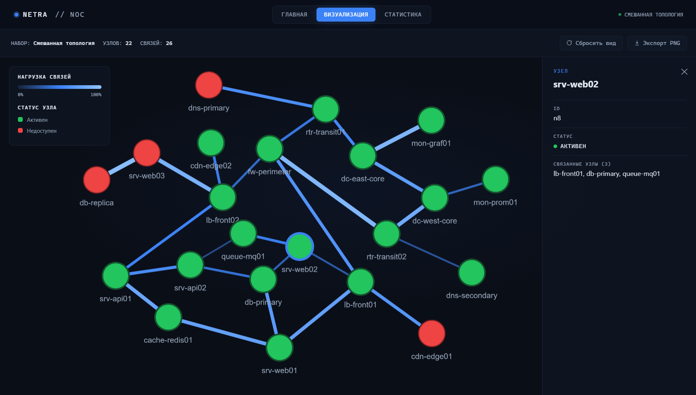

NETRA превращает сырой JSON вашей сети в живую карту узлов и связей. Загрузите свой топологический срез или запустите один из демо-сценариев, чтобы увидеть нагрузку и отказы в реальном времени.
| ID | Метка | Статус |
|---|---|---|
| Нет данных — загрузите набор на вкладке «Главная» | ||